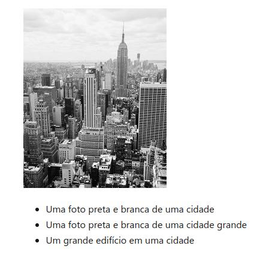
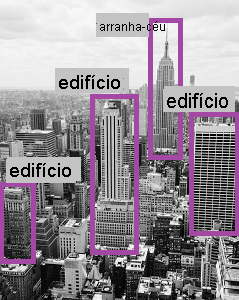

Análise imagem Azure.
Uma das capacidades utilizadas em sistemas de inteligência artificial é a pesquisa visual computacional.
Os computadores não possuem olhos biológicos para identificar imagens, mas podem processar imagens e vídeos e fazer tomadas de decisões.
Com as capacidades visuais, a máquina pode identificar pessoas, locais e objetos.
Além de identificar e marcar objetos, também é possível identificar a movimentação em um determinado espaço.
Outra capacidade, é extrair textos em imagens e transformar em textos estruturados.
Recursos visuais Azure.
Os recursos visuais Azure oferecem capacidades que analisam uma imagem e retornam uma lista
com descrição da imagem. Outra capacidade é retornar marcações associadas a imagem em forma
de metadados.

Existe ainda a capacidade de detectar objetos e marcar em volta do objeto com uma descrição
do objeto.

Também é possível detectar marcas famosas, celebridades, esportistas, monumentos e locais
famosos em uma imagem.

É possível detectar faces e analisar expressões, identificar se a pessoa está sozinha ou
em grupo e categorizar a imagem.

Outra capacidade é a identificação e extração de textos de uma imagem, também conhecido
como OCR.
Conclusão.
Azure oferece uma série de capacidades computacionais visuais já treinadas, o que elimina o trabalho duro de fazer isso programaticamente.